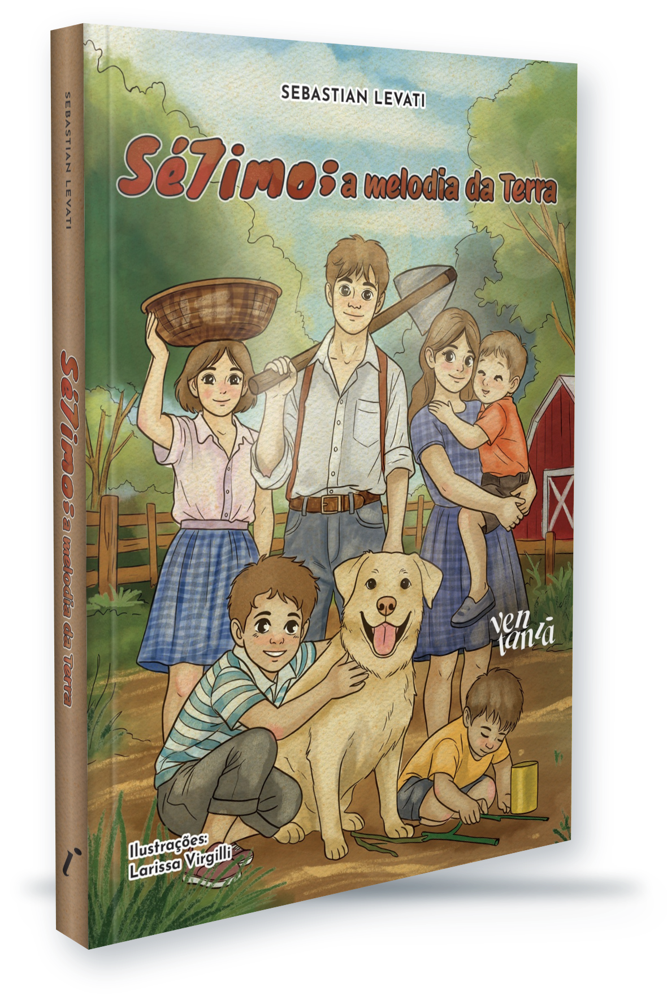
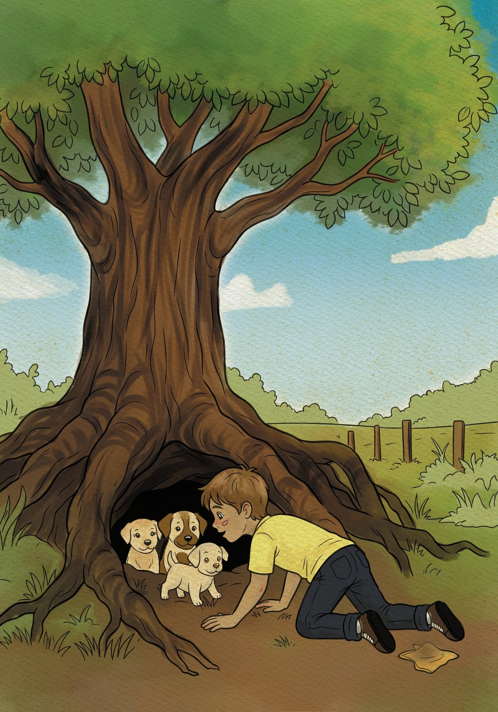
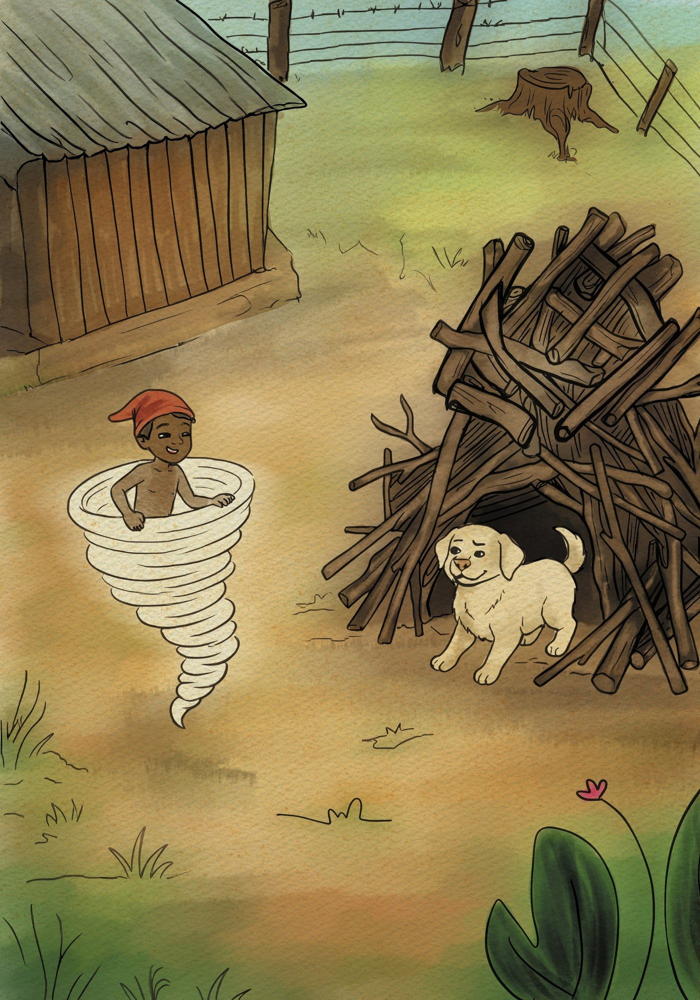
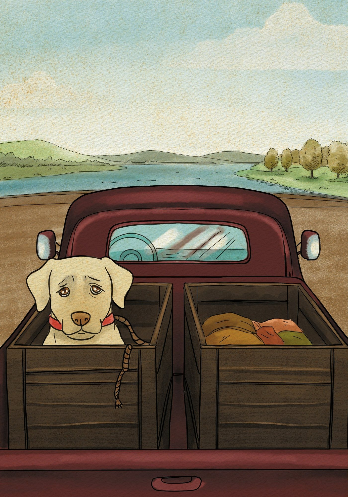
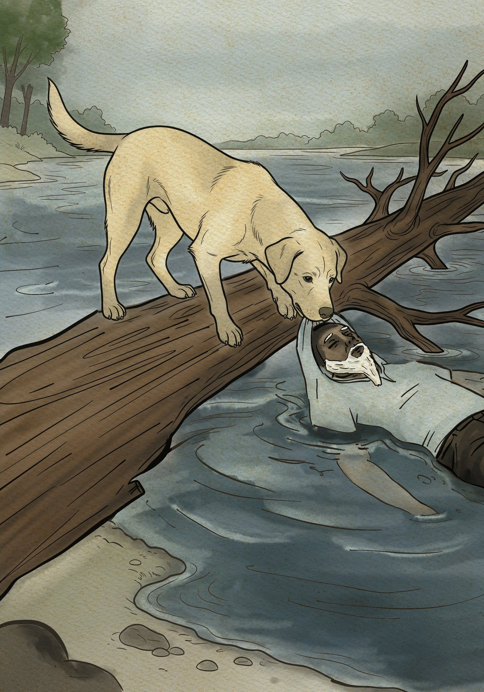
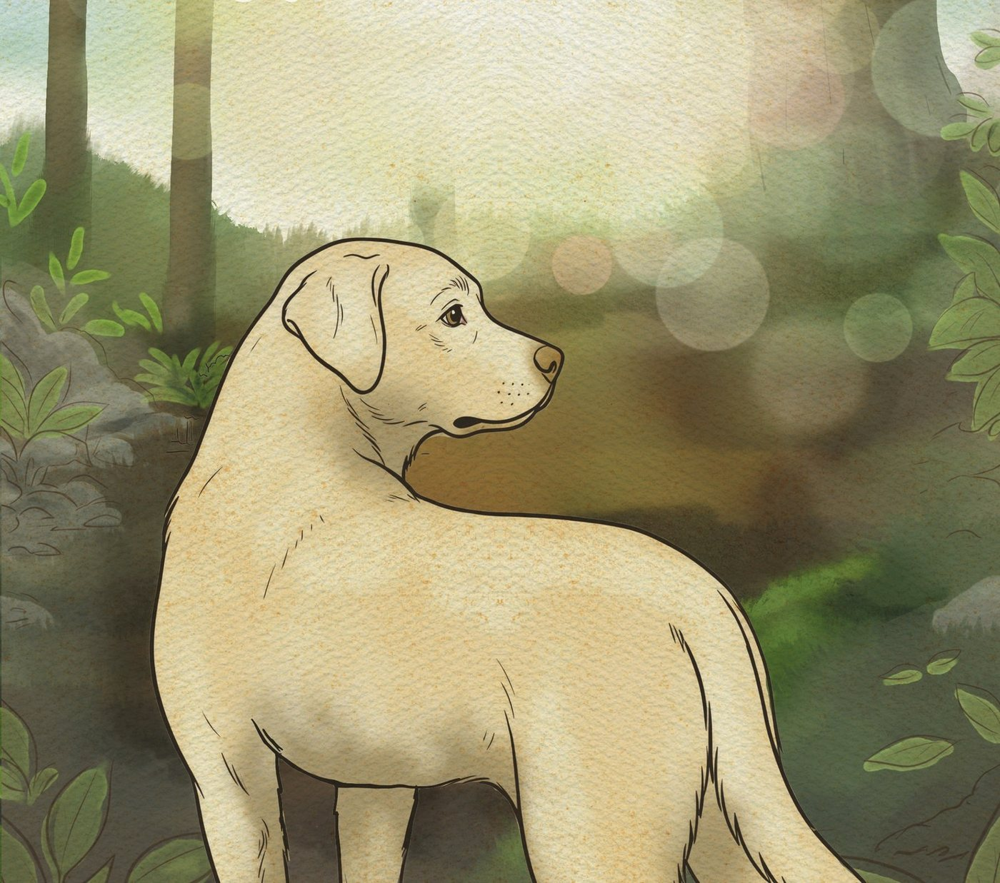
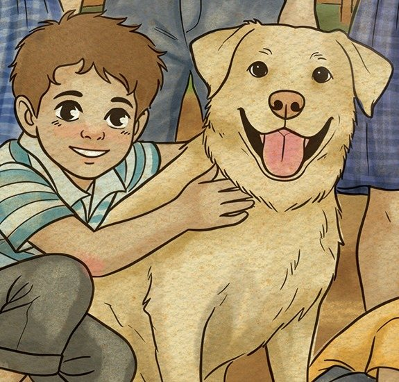

Sebastian Levati
Sé7imo
Para ouvir a alma do mundo e a doce melodia da terra.
Ferido e à espera do fim, um cão conta a sua vida aos sacis que giram nos redemoinhos de vento: a amizade com o menino Jonas, a lida no campo e a força invisível que mantém tudo em equilíbrio.
Garanta o seu exemplarUma fábula cortante sobre a ambição dos homens e a lealdade da terra.
Ao amanhecer, com um tiro entre as costelas, Sétimo chama para perto os sacis que rodopiam nos pés de vento. Antes que o dia termine, ele quer contar a quem tiver paciência as passagens da sua existência. Assim começa o livro: pelo fim, na voz de um cão que diz ter vivido intensamente.
A história volta à toca sob as raízes de uma jaqueira, onde ele nasceu ao lado da mãe de orelha rasgada. Vem a mata queimada, vem a fome, e vem o som de uma gaita: é Jonas, o menino que vira o caldeirão do almoço na porta da toca e se torna o seu primeiro amigo.
Ao lado da família de colonos, Sétimo acompanha colheitas e mudanças, o pai endividado com o patrão que arrenda os cafezais, a mãe adoentada, as noites de chuva e as partidas. Observa os humanos com os instintos de cão e o olhar de quem não entende como eles podem queimar coisas vivas.
Entre o realismo da vida rural e o mistério dos sacis, guardiões invisíveis da natureza, o romance fala de lealdade, dignidade e memória, e de quem ainda sabe escutar a terra.
Das páginas do livro
Ilustrações de Larissa Virgilli que acompanham a história de Sétimo.

Sob as raízes da jaqueira, a toca onde Sétimo nasceu e conheceu Jonas. 
Choco, o saci, gira no redemoinho que leva o filhote até a casa de Jonas. 
No engradado do tio, a viagem que afasta Sétimo do amigo. 
Na travessia do rio, Sétimo enfrenta a correnteza para salvar um homem.
Por que ouvir a história de Sétimo?
Um cão que não é caricatura
Sétimo mantém o faro, os instintos e o corpo de cão, mas observa tudo como um filósofo. Visto pelos olhos dele, o mundo dos homens perde as desculpas.
Sacis como guardiões da natureza
No meio dos redemoinhos, os sacis deixam de ser figuras de brincadeira: protegem a terra e os animais. O realismo mágico encontra a crítica social.
Uma história contada a partir do fim
Começar pelo cão ferido transforma o livro numa reflexão sobre aceitação, dignidade e memória, para leitores a partir de 14 anos.

Jonas sempre falou sobre os entes invisíveis que protegem a natureza. Não tenho certeza se algum dia ele chegou a vê-los. Só sei que vocês são muito espertos, muito velozes. Não gostam que maltratem a terra ou aqueles que dependem dela.
Sobre o autor
Sebastian Levati
Sebastian Levati é escritor e pesquisador literário. É autor do romance histórico Cinzas de Cogumelos Azuis, que debate a resistência política e as marcas da Ditadura Militar no Brasil.
Sua escrita, sensorial e humanista, transita entre a ficção social e o realismo mágico. Em Sé7imo: a melodia da Terra, constrói cenas de realismo e emoção, intercalando drama, ternura e leveza.
São poucos os que tocam a melodia da terra.
Uma sinfonia poética de realismo mágico e denúncia social, narrada a partir do silêncio de um cão.
Para quem tem ligação com os animais, com o campo e com as boas histórias.
Garanta o seu exemplar